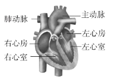
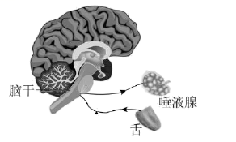

2022年北京市中考生物真题 · 选择题 第11、12、13、14、15题 · 对应解析
11. 如图是人体心脏结构模式图。下列相关叙述错误的是

A. 心肌收缩为血液循环提供动力B. 左心室收缩，将血液泵至肺动脉
C. 房、室间的瓣膜可防止血液倒流D. 右心房、右心室内流的是静脉血
【答案】B
【解析】
【分析】心脏为人体的血液循环提供动力，心脏主要由心肌组成，心脏壁主要由肌肉组织构成。
心脏有四个腔，左心房、左心室、右心房、右心室，其中左心室壁最厚。左右心房之间及左右心室之间被肌肉壁隔开，不相联通，使得心脏完全分成四腔，动脉血和静脉血不再混合，提高输送氧的能力。左心房接收肺静脉注入的含氧量高的动脉血，右心房接收上下腔静脉注入的含氧量少的静脉血。故心脏左侧的心腔和血管（左心房、左心室、肺静脉、主动脉），都流含氧丰富的动脉血；心脏右侧的心腔和血管（右心房、右心室、上下腔静脉、肺动脉），都流含量较少的静脉血。
【详解】A．心肌收缩将血液挤出心脏，为血液循环提供动力，A正确。
B．左心室与主动脉相连，左心室收缩，将血液泵至主动脉，B错误。
C．房、室间的瓣膜称为房室瓣，可使血液只由心房流向心室，防止血液倒流，C正确。
D．右心房、右心室内流的是来自上下腔静脉的静脉血，左心房和左心室内流的是来自肺静脉的动脉血，D正确。
故选B。
12. 尿酸过多在肾小管处形成结晶，会引起上皮细胞坏死，这直接影响肾小管
A. 滤过（过滤）作用B. 重吸收作用C. 贮存尿液D. 排出尿液
【答案】B
【解析】
【分析】尿的形成要经过肾小球（和肾小囊内壁）的滤过和肾小管的重吸收作用。血浆通过肾小球的滤过作用，除了大分子的蛋白质外，其他的如水、无机盐、尿素、葡萄糖会滤过到肾小囊腔形成原尿；原尿流经肾小管时，其中大部分水、部分无机盐和全部的葡萄糖被重新吸收回血液，而剩下的如尿素、一部分无机盐和水等由肾小管流出形成尿液。
【详解】A．尿的形成过程中起过滤作用的是肾小球和肾小囊内壁，A不符合题意。
B．尿的形成要经过肾小球（和肾小囊壁）的滤过和肾小管的重吸收作用。尿酸过多在肾小管处形成结晶，引起上皮细胞坏死，会影响肾小管的重吸收作用，B符合题意。
C．贮存尿液是膀胱的功能，C不符合题意。
D．排出尿液是尿道的功能，D不符合题意。
故选B。
13. 为降低血糖，糖尿病患者可注射的激素是
A. 甲状腺激素B. 性激素
C. 生长激素D. 胰岛素
【答案】D
【解析】
【分析】人体内多种多样的激素，都对生命活动起着重要的调节作用。人体内的激素含量少，作用大。每100毫升血液中，只有几微克激素，却对生长发育和生殖等生命活动起着重要的调节作用。
【详解】A．甲状腺能分泌甲状腺激素等。甲状腺激素可以促进代谢，促进生长发育，提高神经系统的兴奋性，A错误。
B．性激素能促进性器官的发育，并促使人体出现其他的性别特征，B错误。
C．生长激素可以促进人的生长发育。年幼时分泌过多会患巨人症，年幼时分泌不足会患侏儒症。成年后分泌过多会患肢端肥大症，C错误。
D．胰岛B细胞能产生胰岛素。胰岛素可以调节糖在体内的吸收、利用和转化等，当人体内胰岛素分泌不足时，细胞吸收和利用血糖的能力就会减弱，从而导致血糖浓度超过正常水平，为降低血糖，糖尿病患者可注射适量的胰岛素，D正确。
故选D。
14. 人吃酸梅时，唾液分泌量增加，该反射过程如图所示。下列关于该反射的叙述错误的是

A. 结构基础为反射弧B. 神经中枢在脑干
C. 效应器为唾液腺D. 属于条件（复杂）反射
【答案】D
【解析】
【分析】神经调节的基本方式是反射，反射活动的结构基础称为反射弧，包括感受器、传入神经、神经中枢、传出神经和效应器。图中包含的反射弧：舌→传入神经→脑干→传出神经→唾液腺。
条件反射是人出生以后在生活过程中逐渐形成的后天性反射，是在非条件反射的基础上，经过一定的过程，在大脑皮层参与下完成的，是一种高级的神经活动，是高级神经活动的基本方式；非条件反射是指人生来就有的先天性反射，是一种比较低级的神经活动，由大脑皮层以下的神经中枢(如脑干、脊髓)参与即可完成。
【详解】A．神经调节的基本方式是反射，反射活动的结构基础称为反射弧，A正确。
B．由图可知，该反射的神经中枢在脑干，B正确。
C．效应器由传出神经末梢和它控制的肌肉或腺体组成，接受传出神经传来的神经冲动，引起肌肉或腺体活动。由题意可知，该反射的效应器是唾液腺，C正确。
D．条件反射是人出生以后在生活过程中逐渐形成的后天性反射，是在非条件反射的基础上，经过一定的过程，在大脑皮层参与下完成的。结合分析可知，人吃酸梅时，唾液分泌量增加是非条件反射，没有大脑皮层的参与，D错误。
故选D。
15. 青春期是人一生中重要的发育时期，需保持身心健康。下列做法不恰当的是
A. 关注生殖系统卫生B. 拒绝和异性同学交流
C. 积极参加文体活动D. 主动参与家务劳动
【答案】B
【解析】
【分析】青春期是一生身体发育和智力发展的黄金时期。
（1）身体变化。①进入青春期，男孩和女孩的身高、体重都迅速增加，这是青春期形态发育的显著特点；②神经系统以及心脏和肺等器官的功能也明显增强。③性器官迅速发育，男孩出现遗精，女孩会来月经，这是青春期发育的突出特征。
（2）心理变化。①有了强烈的独立的意识、叛逆性，遇到挫折又有依赖性，渴望得到家长和老师的关怀；②内心世界逐渐复杂，有的事情不想跟家长交流；③随着身体的发育，性意识也开始萌动，常表现为从初期的与异性疏远，到逐渐愿意与异性接近，或对异性产生朦胧的依恋。这些都是正常的心理变化。
【详解】A．进入青春期，男性女性性器官迅速发育，应正确认识生殖系统，关注生殖系统卫生，A不符合题意。
B．青春期的同学开始对异性充满好奇，应该建立团结互助的男女同学关系，B符合题意。
C．同学们应正确对待青春期自身的身心变化，积极参加文体活动，树立远大理想，努力学习，C不符合题意。
D．主动参与家务劳动能锻炼自己的生活自理能力，帮助父母减轻负担，D不符合题意。
故选B。